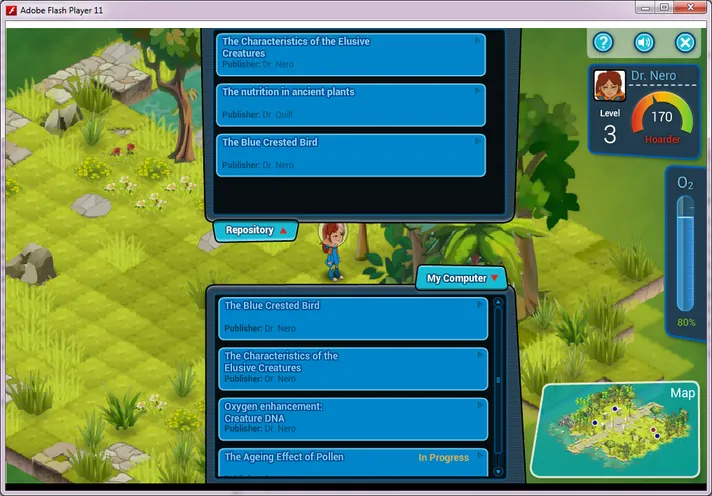
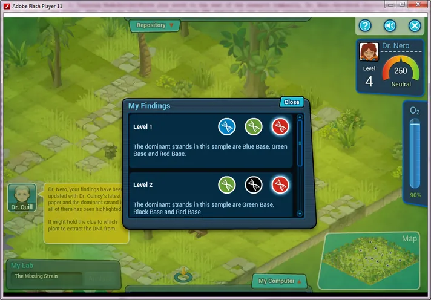
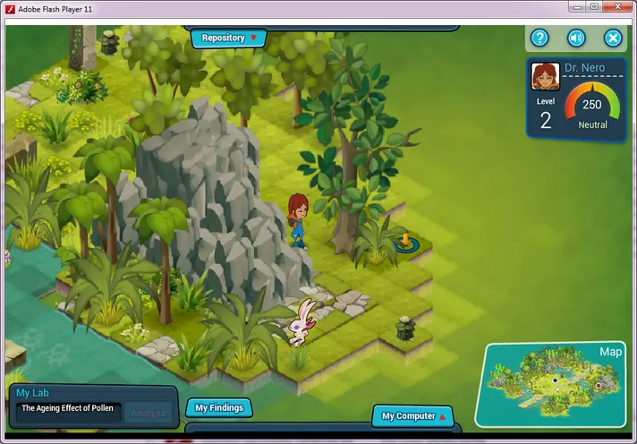

The Curious Case of Dr Nero
An action-adventure RPG for an undisclosed Fortune 500 company, built to reward collaboration instead of competition.
- Role
- Senior Game Designer
- Genre
- Role Playing Game
- Platform
- PC

The challenge
Change how employees behave, from hoarding knowledge to sharing it. The game had to be non-violent and appeal to players aged 30 to 60.
The audience was senior research scientists who were tired of traditional training.
The solution
Players take the role of a scientist on an alien planet, retracing the research of a missing explorer, Dr Nero.
The game recreates real DNA research so it rings true to scientists, and progress depends on working with fellow scientists.



Acclaim
Built as a single-player game, it was rated so highly by the client that it was later converted to multiplayer.
- Best E-learning Game: Gold Medal in Design, LearnX Asia Pacific, May 2013
- Best Use of Games and Simulations for Learning: Bronze, Brandon Hall Excellence Awards, September 2013
- Excellence in Learning: Bronze, Brandon Hall Excellence Awards, October 2013
The role
Designed role-playing, alternate reality and behaviour-change games as learning solutions for Fortune 500 companies, pitching proposals and demos to senior management and CXOs.
Built rapid prototypes and game design documents, modelled level design and game architecture, and led a design team from prototype through alpha, beta and gold.